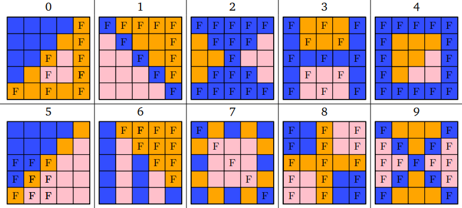
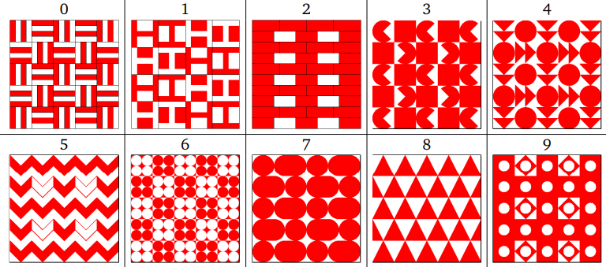
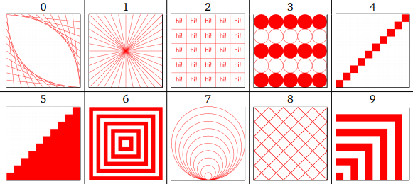

↑
Python Pattern Coursework
For this coursework, I had to generate a pattern based on some user inputs:
- The grid size (5x5, 7x7 or 9x9)
- Some colours from a set list
The patterns were different for everyone and were generated based off of student number.
The Patterns
Antepenultimate (fourth) digit
The fourth digit of the student number determines the layout of the patterns.

This table assumes that the first inputted colour is blue, the second yellow, and third pink.
Patches that are blank correspond to the fifth digit (see below) pattern and those with an F correspond to the last digit pattern.
Penultimate (fifth) digit

Final digit

The program was marked on
- Functionality - is the program complete and robust? What is the quality and robustness of the user interface like?
- Program code quality - how well is the code written? Is there repeated code? Are the algorithms complicated?
In addition, there was a challenge feature to gain more marks. The user can click on a pattern to have it become selected with a border.
The user should the be able to press some buttons on the keyboard for the following functionality:
- 'd' - delete the patch
- 's' - switch the patch design to the other design, keeping colour the same
- 'g', 'b', 'm', 'o' or 'p' - create a patch with the final digit design with the corresponding colour.
- enter - deselect the patch
- all other keys have no effect
The python file is run.
The patchwork size is set to 7 as per user input.
'Red' is input for the first colour.
'Red' is input again to demonstrate the checking of duplicate colours.
'Green' and 'blue' are entered for the next colours.
The patchwork is drawn on screen.
A pattern is selected to demonstrate the selection and 'd' is pressed to delete it. It is then deselected using the Enter key.
Another pattern is then selected and switched to the other pattern using the 's' key.